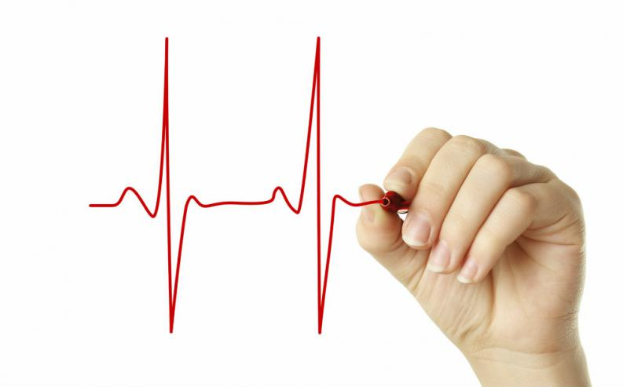

5. Соотношение между объемом и интенсивностью нагрузки при выполнении физ. упражнений представляет собой… Какое из утверждений верно?
6. В отдельном тренировочном занятии нагрузка должна логически увязываться с тренировочным эффектом предшествующих и последующих занятий. Верно ли это утверждение
7. В каком районе ЧСС находится оптимальный уровень нагрузки?
8. Утомление - это…

9. У здорового организма ЧСС после серии занятий физ. упражениями приходит в норму через…
10. Показатель ЧСС лучше всего показывает, как человек переносит нагрузку. Так ли это?
11. Какого способа измерения ЧСС не существует?
12. Какая частота дыхания в покое является нормальной?
13. Какой показатель не является признаком утомления?
14. Какой показатель не является признаком внутреннего утомления?
15. При определении величины нагрузки не принимают во внимание возраст и пол занимающихся, уровень их физической подготовленности, сосочное здоровья… Является ли это утверждение верным?